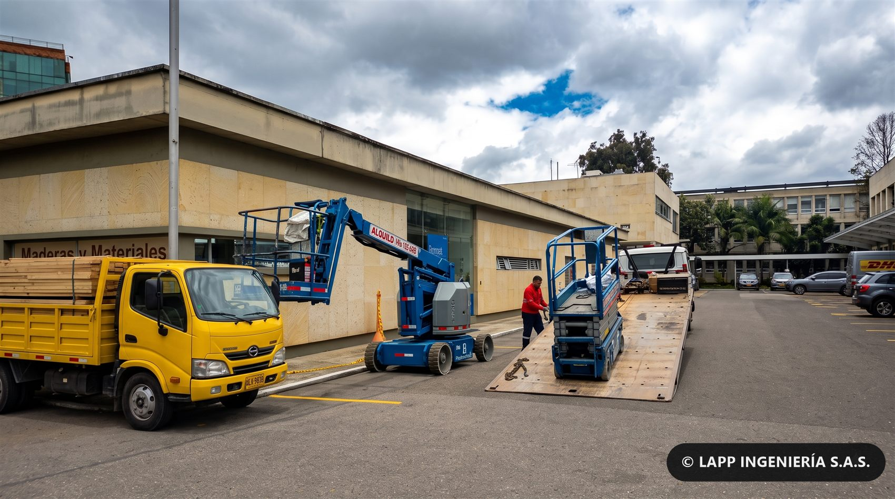
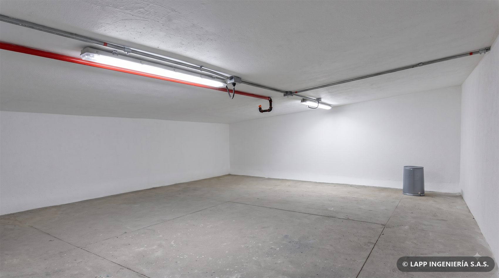
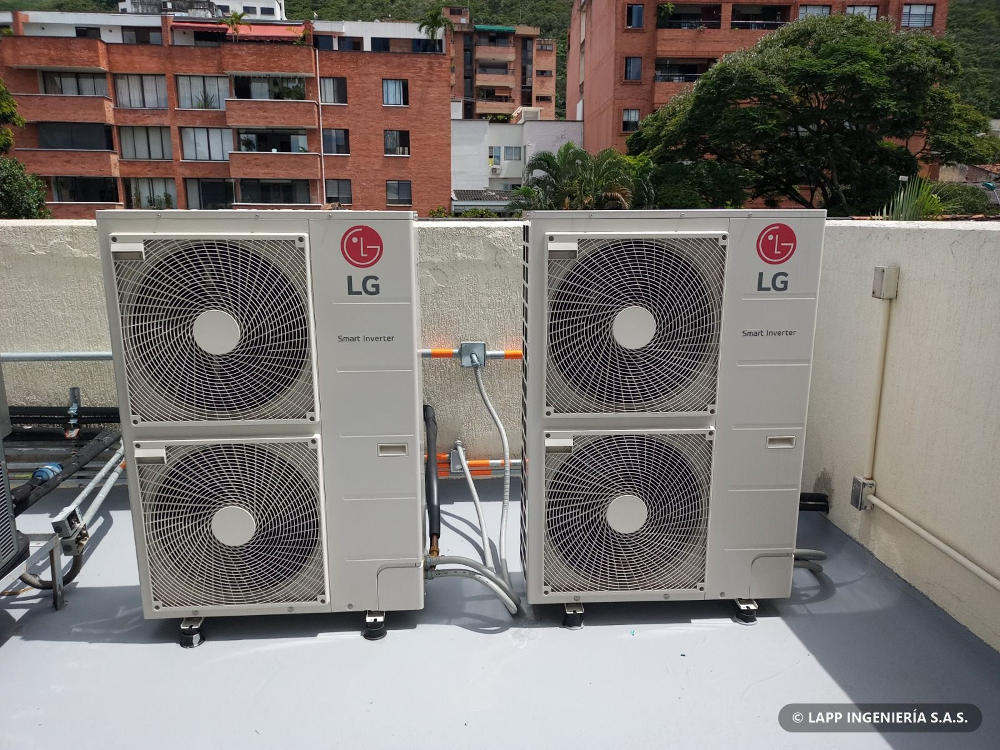
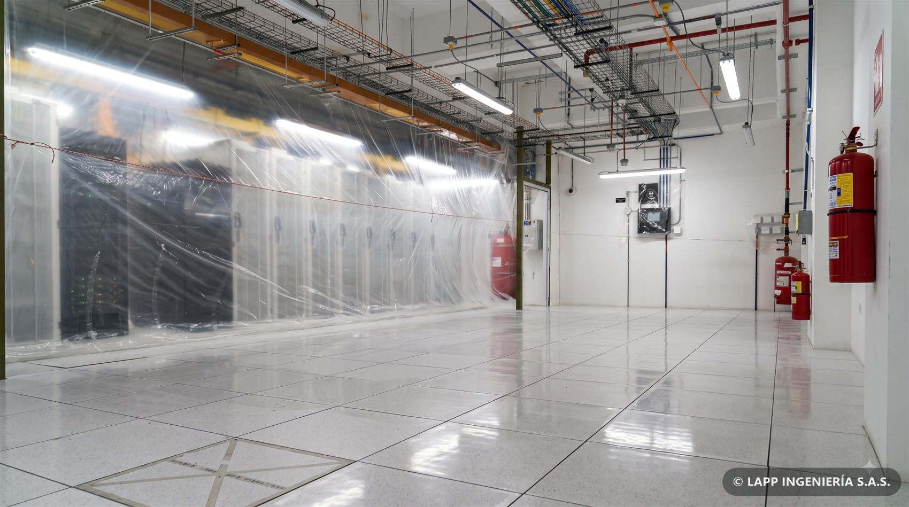
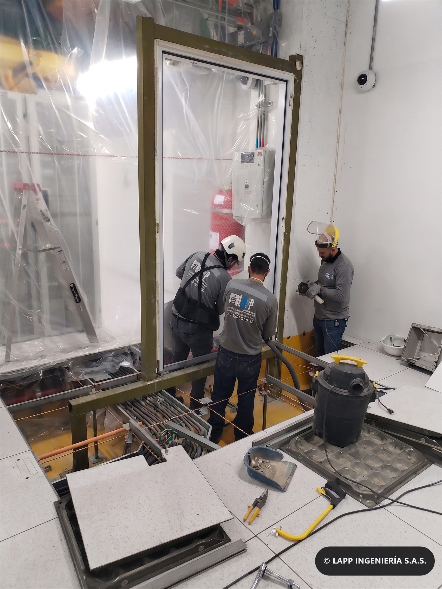

01 — Obra civil
Estructuras en concreto
Vaciado de losas, columnas y elementos estructurales con control de mezcla y curado. Coordinamos el suministro en obra para que el frente de trabajo no se detenga.
LAPP Ingeniería — Servicios
Diseño, licencias, construcción, montaje, interventoría y mantenimiento. Cuatro líneas de servicio coordinadas por un solo equipo, sin intermediarios entre disciplinas.
Modelo interactivo
Encienda cada disciplina para ver cómo se traza sobre el mismo edificio, en el orden real de construcción. Puede orbitar, cortar por altura, despiezar por niveles y reproducir la secuencia completa de obra.
Obra civil Metalmecánica Hidrosanitaria y RCI Eléctrica MT/BT HVAC Data center Redes y seguridad
Cómo prestamos el servicio
No subcontratamos la responsabilidad. El mismo equipo que diseña es el que responde por la obra ejecutada.
01 — Líneas de servicio
Cada línea funciona por separado o combinada dentro del mismo proyecto, con un único interlocutor.
Vaciado de losas, columnas y elementos estructurales con control de mezcla y curado. Coordinamos el suministro en obra para que el frente de trabajo no se detenga.

Perforación con barreno y fundición de pilotes para transmitir la carga a los estratos competentes, con control de profundidad y verticalidad en cada punto.

Fabricación, transporte, izaje y montaje de vigas y perfiles. Ejecutamos ampliaciones sobre edificaciones existentes sin suspender la operación del inmueble.

Fabricación y montaje de barreras en estructura metálica con paneles absorbentes, para el control de ruido de plantas eléctricas y equipos industriales.

Conformación, imprimación y compactación de carpeta asfáltica. Programamos jornadas nocturnas cuando el proyecto exige devolver la vía al servicio durante el día.

Excavación, tendido de ductos y reposición de andén y calzada, con señalización y plan de manejo de tráfico aprobado antes de intervenir el espacio público.

Rampas, escaleras, pasamanos en acero inoxidable y adecuación de andenes, siguiendo la norma de accesibilidad para edificaciones de uso público.

Pisos epóxicos, pintura, demarcación de seguridad y adecuación de áreas técnicas y salas limpias, con los acabados que exige cada tipo de operación.

Intervención en altura con técnicas de acceso por cuerda: limpieza, sello de juntas y reparación puntual, sin necesidad de montar andamio en toda la fachada.

Movilizamos brazos articulados, plataformas de tijera, andamios y herramienta certificada al frente de trabajo, sin depender de la disponibilidad de terceros.

Montaje de acometidas, totalizadores y equipos de medida, incluida la coordinación ante el operador de red hasta dejar el servicio energizado y recibido.

Canalización, cableado, tableros e iluminación para proyectos industriales, comerciales y domiciliarios, con el diseño detallado y los planos récord de la instalación.

Adecuación de cuartos con canalización, red contra incendio, detección y control de acceso, entregados listos para recibir los equipos del cliente.

Barrajes equipotenciales, bandejas portacables y sistemas de respaldo dimensionados para la carga crítica, con mediciones de resistencia documentadas.

Obra civil, canalización y montaje de plantas de emergencia, incluida la conmutación automática y las pruebas con carga antes de la entrega.

Instalación de unidades condensadoras y evaporadoras con su canalización eléctrica, drenajes e impermeabilización del punto de apoyo en cubierta.

Cerramiento en vidrio y aluminio con puertas de acceso controlado, para separar el aire frío del caliente y reducir el consumo de climatización de la sala.

Montaje de racks, distribución eléctrica redundante y sistema de extinción por agente limpio. Entregamos la sala lista para energizar y poner en servicio.

Piso elevado con paneles perforados donde el flujo de aire lo exige, y rutas de cableado señalizadas sobre y bajo el piso para mantener el orden en el tiempo.

Cerramientos metálicos con puertas perforadas para colocación de clientes, cada uno con su control de acceso independiente y trazabilidad de apertura.

Plantas de energía, rectificadores y bancos de baterías dimensionados para sostener la operación durante la transferencia a la planta de emergencia.

Fabricación en taller con aislamiento térmico, transporte e instalación en sitio del shelter completo, energizado y con su sistema de climatización.

Montaje y mantenimiento de torres con personal certificado para trabajo en altura y plan de rescate en sitio durante toda la intervención.

Intervenciones con la sala energizada: aislamiento del área, protección de equipos y control de partículas para no afectar el servicio que está corriendo.

Apertura controlada del piso, tendido de nuevas rutas de cableado y cierre del área, sin interrumpir el servicio de los equipos que quedan alrededor.
No hay servicios en esta categoría.
02 — Servicios complementarios
Diseño estructural, vulnerabilidad y reforzamiento, planos y renders antes de iniciar la obra.
Trámite de licencias de construcción y permisos requeridos para poder iniciar.
Cantidades de obra y presupuesto detallado antes de mover una sola máquina.
Levantamientos en campo como base para el diseño y el presupuesto de obra.
Control técnico, de avance y de seguridad sobre obra propia o de terceros.
Control de avance, cantidades y presupuesto durante toda la ejecución.
Planes preventivos y correctivos sobre lo construido y sobre instalaciones en operación.
Intervención de fachadas y torres con equipo certificado para trabajo en altura.
Adecuación de oficinas, salas de juntas y espacios que siguen en operación.
Gestión de importación de equipos e infraestructura requeridos por el proyecto.
Impermeabilización de cubiertas, losas y estructuras enterradas.
Instalación de shelters de comunicación, tanques de combustible y desgasificación.
03 — Cómo trabajamos
Un proyecto pasa por las mismas cuatro etapas, en este orden. Podemos entrar en cualquiera de ellas.
Diseños civiles, arquitectónicos y estructurales. Vulnerabilidad y reforzamiento. Levantamientos topográficos y diseño eléctrico detallado.
Obtención de licencias y permisos de construcción, cantidades de obra, presupuestos y renders antes de mover una sola máquina.
Construcción, remodelación y montaje con personal propio y equipo certificado. Control de avance y de seguridad en el trabajo.
Interventoría, puesta en marcha y planes de mantenimiento preventivo y correctivo sobre lo construido.
04 — Contacto
Cuéntenos qué tiene en mente. Le respondemos con una propuesta clara y sin compromiso, normalmente el mismo día hábil.